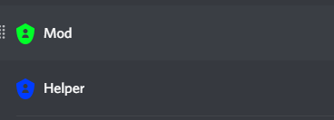
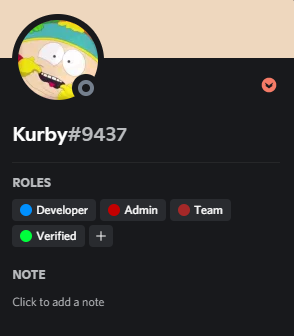
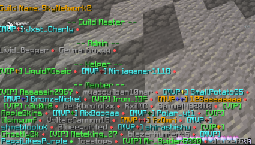

-------------------------------------------------------------------------------------------------------------------------------------------------------------------------------
2. Helper and Moderator Roles that help us moderating the Server!

-------------------------------------------------------------------------------------------------------------------------------------------------------------------------------
3. A developer who is editing/creating things on the Discord and is helping that we dont get any bugs

-------------------------------------------------------------------------------------------------------------------------------------------------------------------------------
4. Ingame Guild
We also got a Ingame Guild with many active member, our goal is it to be a guild for everyone!
So if you wanna join do /g join SkyetWork2!
